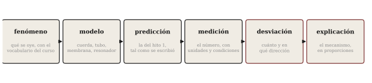

Cómo defender un proyecto acústico
Sesión 15 · Curso Acústica Musical UC Objetivos que cubre: OA5.3 (explicar acústicamente el comportamiento obtenido, incluidas las desviaciones), OA3.2 (conectar sensación, mecanismo y medición en la defensa).
Este apunte es distinto a todos los anteriores: no trae física nueva, porque la sesión 15 no la tiene. Trae el oficio que la sesión evalúa — cómo se defiende un proyecto acústico — condensado para releerse la noche anterior. La pauta completa del hito 3 (formato, tiempos y rúbrica) está en material/curso/sesion-14/actividades/encargo_hito3_presentacion_final.md y se entregó impresa en la sesión 14; este apunte no la reemplaza: explica cómo estar a su altura.
¿Qué se evalúa cuando ya está todo construido?
El instrumento ya existe; sonará lo que va a sonar. Lo único que queda en juego el día de la presentación es la explicación, y esa es precisamente la regla del curso desde el lanzamiento del proyecto en la sesión 3: la calidad de la explicación pesa más que el éxito sonoro (OBJETIVOS_APRENDIZAJE.md, OA5.3 — regla heredada del curso 2019 y conservada a propósito). Un objeto que hizo exactamente lo predicho, presentado sin mecanismo, demuestra suerte. Un objeto que se desvió de la predicción, con la desviación medida, explicada y conectada a un modelo del curso, demuestra aprendizaje. La rúbrica está construida para eso: su dimensión R1 (explicación acústica) desempata y manda.
La columna vertebral de una buena explicación
Toda explicación acústica sólida — la de su proyecto y la de cualquier artículo científico — recorre la misma cadena, en este orden:
fenómeno → modelo → predicción → medición → desviación → explicación
Primero el fenómeno: qué se oye, dicho con el vocabulario del curso (no “suena raro”: “el segundo parcial sobresale y el ataque es más largo que el del hito 1”). Luego el modelo que ustedes eligieron para pensarlo (cuerda, tubo, membrana, resonador) y la predicción que ese modelo produjo — la del hito 1, citada tal como se escribió, sin maquillaje retrospectivo. Después la medición: el número, con unidades y condiciones. Y entonces el momento que separa una defensa buena de una decorativa: la desviación — cuánto se apartó lo medido de lo predicho, en qué dirección — y su explicación con mecanismo, en proporciones (“la fundamental salió un 12 % más grave de lo predicho; el modelo asumía el tubo abierto en ambos extremos, pero el soporte tapa parcialmente uno: eso alarga el tubo efectivo y baja f_1”).

Note que la cadena obliga a las tres capas del curso: el oído (el fenómeno descrito), el mecanismo (modelo y explicación) y la medición (el número que arbitra). Esa integración es exactamente OA3.2, y es lo que las preguntas individuales van a sondear.
Los errores clásicos (y cómo se ven desde la rúbrica)
Contar lo que se hizo en vez de explicar por qué sonó como sonó. Es el error más frecuente: quince minutos de cronología (“primero compramos el tubo, después lo cortamos, después…”) sin un solo mecanismo. La bitácora ya cuenta esa historia; la presentación debe explicar el sonido. Regla práctica: si una lámina no responde a un “¿por qué?”, es bitácora, no defensa (R1 en nivel inicial: “narrativa sin mecanismo físico”).
Esconder la desviación. La tentación de mostrar solo lo que salió bien es humana y es, en este curso, la peor estrategia posible: la desviación explicada vale más que el éxito mudo, y la rúbrica lo dice por escrito (R1 y R3 premian la desviación cuantificada y explicada; R3 castiga la predicción “editada”). Si su instrumento hizo algo que no esperaban, ese es el mejor material que tienen: pónganlo al centro.
Figuras decorativas. Un espectrograma proyectado que nadie lee no es evidencia (R2: “mediciones presentes pero decorativas”). Cada figura debe sostener una afirmación: dígala, apunte al eje, lea el número. Y recuerde que cualquiera de los cuatro puede recibir la pregunta “¿qué significa esta figura?” — el checklist de la pauta lo advierte.
El “porque sí” simétrico. Tan débil como no explicar la desviación es “explicar” el acierto sin mecanismo (“afinó bien porque lo hicimos con cuidado”). El acierto también tiene física; si no puede decir cuál es, la predicción se cumplió de casualidad y eso R1 lo nota.
¿Cómo responder una pregunta que no esperaba?
Las preguntas individuales (una por integrante, por nombre, sin ayuda del grupo) no buscan pillarlo: buscan verificar que el proyecto es de los cuatro. Tres reglas para responder bien:
Primero, tómese cinco segundos. Pensar antes de hablar no descuenta; divagar, sí.
Segundo, responda con la cadena: qué se oye o se midió → qué mecanismo lo explicaría → qué medición lo decidiría. Aunque no sepa la respuesta completa, recorrer la cadena demuestra que sabe pensar el problema — que es lo evaluado.
Tercero, distinga con honestidad “no lo medimos” de “no se puede saber”. Son respuestas opuestas. “No lo medimos” es un dato honesto y recuperable si continúa bien: “…pero se mediría así, y si la hipótesis es correcta debería dar aproximadamente esto” — eso es un nivel experto de la dimensión D3 que el curso entrena desde la semana 1. “No se puede saber”, en cambio, es casi siempre falsa en este curso: con un celular, un espectrograma y una regla se decide casi todo lo que su instrumento hace. Úsela solo si de verdad puede argumentar por qué ninguna medición factible discriminaría entre las hipótesis — y eso, dicho bien, también vale puntos.
Síntesis
- La explicación es la prueba: R1 manda, y la desviación explicada vale más que el éxito mudo.
- Toda la defensa recorre una sola cadena: fenómeno → modelo → predicción → medición → desviación → explicación.
- La cronología es bitácora; la defensa responde “¿por qué sonó así?”.
- Ante una pregunta imprevista: cinco segundos, la cadena, y la diferencia honesta entre “no lo medí” y “no se puede saber”.
Hacia lo que sigue
No hay sesión 16. Lo que sigue es que usted ya no escucha igual: la sesión cierra devolviéndole su hoja de línea base de la semana 1 para que lo compruebe con sus propios ojos y oídos. El resto del arco — del golpe de la sesión 1 a la sala de la 14 — está recapitulado en el capítulo 15, que es también la mejor guía para preparar esta defensa.
Referencias
- Pauta del hito 3:
material/curso/sesion-14/actividades/encargo_hito3_presentacion_final.md(formato, tiempos, rúbrica R1–R4, checklist). OBJETIVOS_APRENDIZAJE.md, OA5.3 — la regla “la calidad de la explicación pesa más que el éxito sonoro”.METODOLOGIA.md, §4 — el proyecto individual y las preguntas al autor en la defensa.- El semestre completo: capítulos 1–14 del curso — cada modelo que su defensa necesite está en alguno de ellos.